主机甲与主机乙之间已建立一个TCP连接、主机甲向主 机乙发送了3个连续的TCP段, 分别包含 300B、400B和500B的有效载荷, 第3个段的序号为 900。若主机乙仅正确接收到第 1个段和第3个段，则主机乙发送给主机甲的确认序号是( )。
300
500
1200
1400
B
TCP 育部的序号字段是指本报文段数据部分的第一个字节的序号，而确认号是期待收到对方一个报文段的第一个字节的序号。第三个段的序号为900，则第二个段的序号为900-400=500，现在主机乙期待收到第二个段，因此发给甲的确认号是500。
主机甲和主机乙之间已建立一个 TCP 连接, TCP 最大段长为 1000B。若主机甲的当前拥塞窗口为4000B，在主机甲向主机乙连续发送两个最大段后，成功收到主机乙发送的第一个段的确认段，确认段中通告的接收窗口大小为2000B，则此时主机甲还可以向主机乙发送的最大字节数是 ( )。
1000
2000
3000
4000
A
发送方的发送窗口的上限值取接收方窗口和拥塞窗口这两个值中的较小一个，于是此时发送方的发送窗口为min{4000，2000}=2000B，由于发送方还未收到第二个最大段的确认，所以此时主机甲还可以向主机乙发送的最大字节数为2000-1000=1000B。
主机甲向主机乙发送一个(SYN=1, seq=11220)的TCP段, 期望与主机乙建立TCP连接，若主机乙接受该连接请求，则主机乙向主机甲发送的正确的TCP段可能是 ( )。
(SYN=0, ACK=0, seq=11221, ack=11221)
(SYN=1, ACK=1, seq=11220, ack=11220)
(SYN=1, ACK=1, seq=11221, ack=11221)
(SYN=0, ACK=0, seq=11220, ack=11220)
C
在确认报文段中，同步位 SYN 和确认位ACK必须都是1；返回的确认号ack是甲发送的初始序号seq=11220加1, 即ack=11221; 同时乙也要选择并消耗一个初始序号seq, seq值由乙的TCP 进程任意给出，它与确认号、请求报文段的序号没有任何关系。
以下关于FTP 工作模型的描述中，错误的是( )。
FTP 使用控制连接，数据连接来完成文件的传输
用于控制连接的TCP 连接在服务器端使用的熟知端口号为21
用与控制连接的TCP连接在客户端使用的端口号为20
服务器端由控制进程、数据进程两部分组成
C
在服务器端，控制连接使用TCP 的21号端口，数据连接使用TCP 的20号端口；而在客户端，控制连接和数据连接的TCP端口号都是由客户端系统自动分配的。需要注意的是，当我们说FTP 使用20、21号端口, HTTP 使用80号端口,SMTP 使用25号端口时, 都是指相应协议的服务器端所使用的端口号，而客户端使用系统自动分配的端口号向这些服务的熟知端口发起连接。
假设主机甲和主机乙已建立一个 TCP连接，最大段长MSS=1KB，甲一直向乙发送数据，当甲的拥塞窗口为16KB时，计时器发生了超时，则甲的拥塞窗口再次增长到16KB所需要的时间至少是( )。
4 RTT
5 RTT
11 RTT
16 RTT
时刻0发生了超时，门限值ssthresh变为拥塞窗口cwnd的一半即8，同时 cwnd置为1，执行慢开始算法,cwnd指数增长,经过3个 RTT, 增长到ssthresh 值; 之后执行拥塞避免算法, cwnd线性增长, 再经过8个 RTT, 增长到16, 共花费11个RTT, 如下表所示。
时刻 |
0 |
1 |
2 |
3 |
4 |
5 |
6 |
7 |
8 |
9 |
10 |
11 |
拥塞窗口 |
1 |
2 |
4 |
8 |
9 |
10 |
11 |
12 |
13 |
14 |
15 |
16 |
若本地域名服务器无缓存，则在采用递归方法解析另一网络某主机域名时，用户主机和本地域名服务器发送的域名请求条数分别为 ( )。
1条, 1条
1条, 多条
多条, 1条
多条, 多条
A
采用递归查询时，如果主机所询问的本地域名服务器不知道被查询域名的 IP 地址，那么本地域名服务器就以 DNS 客户的身份，向根域名服务器继续发出查询请求报文，而不是让该主机自己进行下一步的查询。因此，采用这种方法时，用户主机和本地域名服务器发送的域名请求条数均为1。因此答案为选项A。
计算机网络可分为通信子网和资源子网。下列属于通信子网的是 ( )。
I 网桥 II. 交换机 III. 计算机软件 IV. 路由器
I、 II、 IV
II、 III、 IV
I、 III、 IV
I、 II、 III
A
资源子网主要由计算机系统、终端、联网外部设备、各种软件资源和信息资源等组成。资源子网负责全网的数据处理业务，负责向网络用户提供各种网络资源与网络服务。通信子网由通信控制处理机、通信线路和其他通信设备组成，其任务是完成网络数据传输、转发等。
由此可知，网桥、交换机和路由器都属于通信子网，只有计算机软件属于资源子网。
在右图所示的采用 “存储-转发”方式的分组交换网络中，所有链路的数据传输速率为100Mb/s,分组大小为1000B,其中分组头大小为20B。若主机H1向主机 H2发送一个大小为 980000B 的文件，则在不考虑分组拆装时间和传播延迟的情况下，从H1发送开始到H2接收完为止，需要的时间至少是( )。
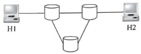
80ms
80.08ms
80.16ms
80.24ms
C
分组大小为1000B，分组头大小为20B，则分组携带的数据大小为980B，文件长度为980000B，
需拆分为1000个分组，加上头部后，每个分组大小为1000B，共需要传送的数据量大小为1MB。由于所有链路的数据传输速率相同，因此文件传输经过最短路径时所需的时间最少，最短路径经过2个分组交换机。
当t=1M×8/(100Mb/s)=80ms时, H1 发送完最后一个比特。
当H1发送完最后一个分组时，该分组需要经过2个分组交换机的转发，在2次转发完成后，所有分组均到达H2。每次转发的时间为t₀=1K×8/(100Mb/s)=0.08ms。
所以, 在不考虑分组拆装时间和传播延迟的情况下, 当t=80ms+2t₀=80.16ms时, H2 接收完文件，即所需的时间至少为80.16ms。
在题48图中，假设连接R1、R2和R3之间的点对点链路使用地址201.1.3. x/30,当H3访问Web服务器S时, R2转发出去的封装HTTP请求报文的IP分组是源IP地址和目的IP 地址，它们分别是( )。
, 192.168.3.251, 130.18.10.1
192.168.3.251, 201.1.3.9
201.1.3.8, 130.18.10.1
201.1.3.10, 130.18.10.1
由题意知连接 R1、R2 和 R3 之间的点对点链路使用 201.1.3. x/30 地址, 其子网掩码为255.255.255.252,R1的一个接口的IP 地址为201.1.3.9,转换为对应的二进制的后8位为0000 1001(由201.1.3.x/30知，IP地址对应的二进制的后两位为主机号，而主机号全为0表示本网络本身，主机号全为Ⅰ表示本网络的广播地址，不用于源IP 地址或目的 IP 地址)，那么除201.1.3.9 外，只有IP 地址为201.1.3.10可以作为源IP地址使用(本题为201.1.3.10)。Web服务器的 IP 地址为130.18.10.1, 作为IP分组的目的IP 地址。综上可知, D 正确。
某客户通过一个 TCP连接向服务器发送数据的部分过程如下图所示。客户在t₀时刻第一次收到确认序列号 ack seq=100(的段, 并发送序列号seq=100的段,但发生丢失。若TCP 支持快速重传，则客户重新发送seq=100.段的时刻是 ( )。
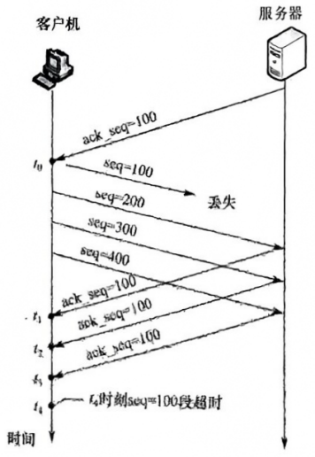
t₁
t₂
t₃
t₄
C
TCP 规定当发送方收到对同一个报文段的3个重复确认时，就可以认为跟在这个被确认报文段之后的报文已丢失，立即执行快速重传算法。t₃时刻连续收到来自服务器的三个确认序列号ack seq=100的段, 发送方认为 seq=100的段已经丢失，执行快速重传算法，重新发送 seq=100的段。
下列有关曼彻斯特编码的叙述，正确的是( )
每个信号起始边界作为时钟信号有利于同步
将时钟与数据取值都包含在信号中
这种模拟信号的编码机制特别适合于传输声音
每位的中间不跳变表示信号的取值为0
B
曼彻斯特编码将每个码元分成两个相等的间隔。前面一个间隔为高电平而后一个间隔为低电平表示码元1，码元0正好相反：也可以采用相反的规定，因此选项D 错。位中间的跳变作为时钟信号，每个码元的电平作为数据信号，因此选项B正确。曼彻斯特编码将时钟和数据包含在数据流中，在传输代码信息的同时，也将时钟同步信号一起传输到对方，因此选项A错。声音是模拟数据，而曼彻斯特编码最适合传输二进制数字信号，因此选项C错。
使用两种编码方案对比特流01100111进行编码的结果如下图所示，编码1和编码2分别是 ( )。
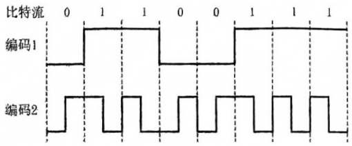
NRZ和曼彻斯特编码
NRZ和差分曼彻斯特编码
NRZI和曼彻斯特编码
NRZI和差分曼彻斯特编码
A
NRZ 是最简单的串行编码技术，它用两个电压来代表两个二进制数，如高电平表示1，低电平表示0，题中编码1符合。NRZI是用电平的一次翻转来表示0，与前一个 NRZI电平相同的电平表示 1。曼彻斯特编码将一个码元分成两个相等的间隔，前一个间隔为高电平而后一个间隔为低电平表示1：0的表示方式正好相反，题中编码2符合。
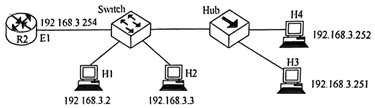
设主机甲通过TCP向主机乙发送数据，部分过程如下图所示。甲在t₀时刻发送一个序号seq=501、封装200B数据的段，在t₁时刻收到乙发送的序号seq=601、确认序号 ack seq=501、接收窗口revwnd=500B 的段，则甲在未收到新的确认段之前，可以继续向乙发送的数据序号范围是( )。
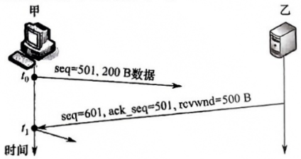
501~1000
601~1100
701~1000
801~1100
C
依题意，甲发送200B报文后，继续发送的报文段中序号字段seq=701。由于乙被告知接收窗口为500，且甲未收到乙对seq=501 报文段的确认，甲还能发送的报文段字节数为： 500-200=300B,因此甲在未收到新的确认段之前，还能发送的数据序号范围是701~1000。
计算机网络可被理解为 ( )。
执行计算机数据处理的软件模块
由自治的计算机互连起来的集合体
多个处理器通过共享内存实现的紧耦合系统
用于共同完成一项任务的分布式系统
B
计算机网络是由自治计算机互连起来的集合体，其中包含着三个关键点：自治计算机、互连、集合体。自治计算机由软件和硬件两部分组成，能完整地实现计算机的各种功能；互连是指计算机之间能实现相互通信；集合体是指所有使用通信线路及互连设备连接起来的自治计算机的集合。选项C和D分别指多机系统和分布式系统。
下列说法错误的是 ( )。
Internet上提供客户访问的主机一定要有域名
同一域名在不同时间可能解析出不同的IP地址
多个域名可以指向同一台主机IP 地址
IP 子网中的主机可以由不同的域名服务器来维护其映射
A
Internet 上提供访问的主机一定要有IP 地址，而不一定要有域名，选项A 错。域名在不同的时间可以解析出不同的IP 地址，因此可以用多台服务器来分担负载，选项B 对。也可以把多个域名指向同一台主机IP 地址，选项C对。IP 子网中主机也可以由不同的域名服务器来维护其映射,选项D对。
一台主机要解析www.cskaoyan.com的IP地址,如果这台主机配置的域名服务器为202.120.66.68, 因特网顶级域名服务器为11.2.8.6, 而存储www.cskaoyan.com的IP地址对应关系的域名服务器为202.113.16.10，那么这台主机解析该域名通常首先查询( )。
202.120.66.68域名服务器
11.2.8.6域名服务器
202.113.16.10域名服务器
可以从这3个域名服务器中任选一个
A
当这台主机发出对www.cskaoyan.com的DNS查询报文时，这个查询报文首先被送往该主机的本地域名服务器 202.120.66.68。本地域名服务器不能立即回答该查询时，就以 DNS 客户的身份向某一根域名服务器查询。但不管采用何种查询方式，首先都要查询本地域名服务器。
在一个 TCP连接中，MSS为IKB，当拥塞窗口为34KB时发生了超时事件。如果在接下来的4个RTT内报文段传输都是成功的，那么当这些报文段均得到确认后，拥塞窗口的大小是( )。
8KB
9KB
16KB
17KB
C
在拥塞窗口为34KB时发生了超时，那么慢开始门限值(ssthresh) 就被设定为 17KB，并且在第一个RTT中拥塞窗口(cwnd) 置为1KB。按照慢开始算法, 第二个 RTT中cwnd=2KB,第三个 RTT中cwnd=4KB, 第四个RTT 中cwnd=8KB。当第四个 RTT中发出去的8个报文段的确认报文收到后，cwnd=16KB(此时还未超过慢开始门限值)。所以选 C。本题中“这些报文段均得到确认后”这句话很重要。
下列关于PTP 的叙述中, 错误的是( )
数据连接在每次数据传输完毕后就关闭
控制连接在整个会话期间保持打开状态
服务器与客户端的TCP20端口建立数据连接
客户端与服务器的TCP21端口建立控制连接
C
FTP 使用控制连接和数据连接，控制连接存在于整个FTP 会话过程中，数据连接在每次文件传输时才建立，传输结束就关闭，选项A和B正确。默认情况(PORT 模式)下FTP 服务器使用TCP20端11进行数据连接，使用TCP21端口进行控制连接，这里的端口号是指 FTP 服务器的端口号，选项C错误，选项D正确。此外还需要注意的是，FTP 服务器是否使用TCP 20端口建立数据连接与传输模式有关，PORT模式使用TCP 20端口，PASV 模式由服务器和客户端协商决定。
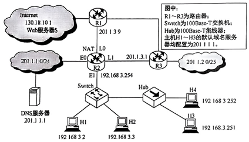
主机甲和主机乙新建一个 TCP连接，甲的拥塞控制初始阈值为32KB，甲向乙始终以MSS=1KB大小的段发送数据，并一直有数据发送；乙为该连接分配16KB接收缓存，并对每个数据段进行确认，忽略段传输延迟。若乙收到的数据全部存入缓存，不被取走，则甲从连接建立成功时刻起，未出现发送超时的情况下，经过4个 RTT后，甲的发送窗口是 ( )。
1KB
8KB
16KB
32KB
A
发送窗口的上限值=min{接收窗口，拥塞窗口}。4个RTT后，乙收到的数据全部存入缓存，不被取走,接收窗口只剩下 1KB(16-1-2-4-8=1) 缓存, 使得甲的发送窗口为1KB。
路由器R通过以太网交换机S1和S2连接两个网络，R的接口、主机H1和H2的IP地址与MAC 地址如下图所示。若H1向H2发送一个IP分组P, 则H1发出的封装P的以太网帧的目的MAC地址、H2收到的封装P的以太网帧的源MAC地址分别是( )。
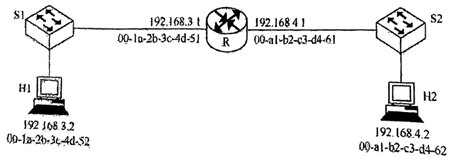
00-a1-b2-c3-d4-62, 00-la-2b-3c-4d-52
00-a1-b2-c3-d4-62, 00-a1-b2-c3-d4-61
00-1a-2b-3c-4d-51, 00-la-2b-3c-4d-52
00-1a-2b-3c-4d-51, 00-a1-b2-c3-d4-61
在网络的信息传递中，会经常用到两个地址:MAC 地址和 IP 地址。其中，MAC 地址会随着信息被发往不同的网络而改变，但IP地址当且仅当信息在私人网络中传递时才会改变。分组P在如题图所示的网络中传递时，首先由主机H1将分组发往路由器R，此时源MAC 地址为H1主机本身的 MAC 地址, 即 00-1a-2b-3c-4d-52, 目的 MAC 地址为路由器 R 的 MAC 地址, 即00-1a-2b-3c-4d-51。路由器R收到分组P后, 根据分组P 的目的IP地址,得知应将分组从另一个端口转发出去，于是会给分组P 更换新的MAC 地址，此时由于从另外的端口转发出去，因此P的新源MAC 地址变为负责转发的端口MAC地址,即00-al-b2-c3-d4-61, 目的MAC地址应为主机 H2的MAC地址, 即 00-a1-b2-c3-d4-62。根据分析过程, 题目所问的 MAC 地址应为路由器 R两个端口的MAC 地址，因此选 D。
下列说法中，正确描述了OSI参考模型中数据的封装过程的是 ( )。
数据链路层在分组上仅增加了源物理地址和目的物理地址
网络层将高层协议产生的数据封装成分组，并增加第三层的地址和控制信息
传输层将数据流封装成数据帧，并增加可靠性和流控制信息
表示层将高层协议产生的数据分割成数据段，并增加相应的源和目的端口信息
B
数据链路层在分组上除增加源和目的物理地址外，也增加控制信息；传输层的 PDU 不称为帧；表示层不负责把高层协议产生的数据分割成数据段，且负责增加相应源和目的端口信息的应是传输层。选项B正确描述了OSI参考模型中数据的封装过程，数据经过网络层后，只是增加了第三层 PCI。
下列叙述中,正确的是( )。
电路交换是真正的物理线路交换，而虚电路交换是逻辑上的连接，且一条物理线路只可以进行一条逻辑连接
虚电路的连接是临时性连接，当会话结束时就释放这种连接
数据报服务不提供可靠传输，但可以保证分组的有序到达
数据报服务中，每个分组在传输过程中都必须携带源地址和目的地址
D
电路交换是真正的物理线路交换，例如电话线路；虚电路交换是多路复用技术，每条物理线路可以进行多条逻辑上的连接，选项A错误。虚电路不只是临时性的，它提供的服务包括永久性虚电路(PVC)和交换型虚电路(SVC)，其中前者是一种提前定义好的、基本上不需要任何建立时间的端点之间的连接，而后者是端点之间的一种临时性连接，这些连接只持续所需的时间，并且在会话结束时就取消这种连接，选项B错误。数据报服务是无连接的，不提供可靠性保障，也不保证分组的有序到达，选项C错误。数据报服务中，每个分组在传输过程中都必须携带源地址和目的地址；而虚电路服务中，在建立连接后，分组只需携带虚电路标识，而不必带有源地址和目的地址，选项D 正确。
测得一个以太网的数据波特率是40MBaud，那么其数据率是 ( )
10Mb/s
20Mb/s
40Mb/s
80Mb/s
B
因为以太网采用曼彻斯特编码，每位数据(一个比特，对应信息传输速率)都需要两个电平(两个脉冲信号，对应码元传输速率)来表示，因此波特率是数据率的两倍，得数据率为(40Mb/s)/2=20Mb/s。
注意：对于曼彻斯特编码，每个比特需要两个信号周期，20MBaud的信号率可得10Mb/s的数据率, 编码效率是50%; 对于4B/5B编码, 每4比特组被编码成5比特, 12.5MBaud的信号率可得10Mb/s, 编码效率是80%。
上下邻层实体之间的接口称为服务访问点，应用层的服务访问点也称( )。
用户界面
网卡接口
IP地址
MAC地址
A
服务访问点(SAP)是在一个层次系统的上下层之间进行通信的接口，N层的SAP 是N+1层可以访问 N层服务的地方。一般而言，物理层的服务访问点是“网卡接口”，数据链路层的服务访问点是“MAC 地址(网卡地址)”，网络层的服务访问点是“IP 地址(网络地址)”，传输层的服务访问点是“端口号”，应用层提供的服务访问点是“用户界面”。
注意：关于各层SAP的说法，作者翻阅了经典教材，都未找到明确内容。上述说法，网络上能搜到大量相关习题，作者理解为是基于TCP/IP 协议族的。关于各层SAP 还有一种说法认为，数据链路层的SAP为帧的“类型”字段，网络层的SAP为IP数据报首部的“协议”字段。
下列关于电子邮件格式的说法中，错误的是( )。
电子邮件内容包括邮件头与邮件体两部分
邮件头中发信人地址(From: )、发送时间、收信人地址(To:)及邮件主题(Subject:)是由系统自动生成的
邮件体是实际要传送的信函内容
MIME 允许电子邮件系统传输文字、图像、语音与视频等多种信息
B
邮件头是由多项内容构成的，其中一部分是由系统自动生成的，如发信人地址(From：)、发送时间；另一部分是由发件人输入的，如收信人地址(To：)、邮件主题(Subject：)等。
假设在没有发生拥塞的情况下，在一条往返时延RTT为10ms的线路上采用慢开始控制策略。如果接收窗口的大小为24KB，最大报文段MSS为2KB。那么发送方能发送出第一个完全窗口 (也就是发送窗口达到24KB)需要的时间是( )。
30ms
40ms
50ms
60ms
B
按照慢开始算法，发送窗口的初始值为拥塞窗口的初始值，即MSS 的大小 2KB，然后依次增大为4KB、8KB、16KB，然后是接收窗口的大小24KB，即达到第一个完全窗口。因此达到第一个完全窗口所需要的时间为4RTT=40ms。
两个网段在物理层进行互连时要求 ( )。
数据传输速率和数据链路层协议都可以不同
数据传输速率和数据链路层协议都要相同
数据传输速率要相同，但数据链路层协议可以不同
数据传输速率可以不同，但数据链路层协议要相同
C
物理层是OSI参考模型的第1层，它建立在物理通信介质的基础上，作为与通信介质的接口。在物理层互连时，各种网络的数据传输速率如果不同，那么可能出现以下两种情况：①发送方的速率高于接收方，接收方来不及接收导致溢出(因为物理层没有流量控制)，数据丢失。②接收方的速率高于发送方，不会出现数据丢失的情况，但效率极低。
综上所述，数据传输速率必须相同。另外，数据链路层协议可以不同，如果是在数据链路层互连，那么要求数据链路层协议也要相同。注意，在物理层互连成功，只表明这两个网段之间可以互相传送物理层信号，但并不能保证可以互相传送数据链路层的帧；要达到在数据链路层互连互通的目的，则要求数据传输速率和数据链路层协议都相同。
不含同步信息的编码是 ( )。
I. 非归零编码 Ⅱ. 曼彻斯特编码 Ⅲ. 差分曼彻斯特编码
仅I
仅Ⅱ
仅II、III
I、 II、 III
A
非归零编码是最简单的一种编码方式，它用低电平表示 0，用高电平表示 1；或者相反。由于每个码元之间并没有间隔标志，所以它不包含同步信息。
曼彻斯特编码和差分曼彻斯特编码都将每个码元分成两个相等的时间间隔。将每个码元的中间跳变作为收发双方的同步信息，所以无须额外的同步信息，实际应用较多。但它们所占的频带宽度是原始基带宽度的2倍。
将1路模拟信号分别编码为数字信号后，与另外7路数字信号采用同步TDM方式复用到一条通信线路上。1路模拟信号的频率变化范围为0~1kHz，每个采样点采用PCM方式编码为4位的二进制数，另外7路数字信号的数据率均为7.2kb/s。复用线路需要的最小通信能力是( )。
7.2kb/s
8kb/s
64kb/s
512kb/s
C
1 路模拟信号的最大频率为 1kHz，根据采样定理可知采样频率至少为2kHz，每个样值编码为4位二进制数，所以数据传输速率为8kb/s。复用的每条支路速率要相等，而另外7路数字信号的速率均低于8kb/s，所以它们均要采用脉冲填充方式，将数据率提高到8kb/s，然后将这8路信号复用，需要的通信能力为8kb/s×8=64kb/s。
一个TCP连接总以1KB的最大段长发送TCP段，发送方有足够多的数据要发送，当拥塞窗口为16KB时发生了超时，如果接下来的4个RTT 时间内的TCP段的传输都是成功的，那么当第4个RTT时间内发送的所有 TCP段都得到肯定应答时，拥塞窗口大小是( )。
7KB
8KB
9KB
16KB
C
发生超时后,慢开始门限ssthresh变为16KB/2=8KB, 拥塞窗口变为1KB。在接下来的3个RTT 内, 执行慢开始算法, 拥塞窗口大小依次为2KB、4KB、8KB, 由于慢开始门限 ssthresh为2KB，因此之后转而执行拥塞避免算法，即拥塞窗口开始“加法增大”。因此第4个 RTT结束后，拥塞窗口的大小为9KB。
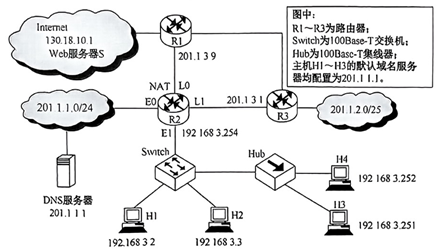
某路由表中有转发接口相同的4条路由表项，其目的网络地址分别为35.230.32.0/21、35.230.40.0/21、35.230.48.0/21 和35.230.56.0/21, 将该4条路由聚合后的目的网络地址为( )。
35.230.0.0/19
35.230.0.0/20
35,230.32.0/19
35.230.32.0/20
对于此类题目，先分析需要聚合的IP 地址。观察发现，题中的四个路由地址，前16位完全相同，不同之处在于第3段的8位中，将这8位展开写成二进制，分别如下:
某自治系统内采用RIP，若该自治系统内的路由器R1收到其邻居路由器R2的距离向量，距离向量中包含信息<netl，16>， 则能得出的结论是 ( )。
R2可以经过R1到达netl, 跳数为17
R2 可以到达 net1, 跳数为 16
R1可以经过 R2到达netl, 跳数为 17
R1不能经过R2到达 netI
R1 在收到信息并更新路由表后，若需要经过R2 到达 net1，则其跳数为17，由于距离为16表示不可达, 因此R1不能经过 R2到达 net1, R2 也不可能到达 netl。选项B、C错误, 选项D正确。而题目中并未给出R1向R2发送的信息，因此选项A也不正确。
假设所有域名服务器均采用迭代查询方式进行域名解析。 当主机访问规范域名为www.abc.xyz.com的网站时，域名服务器在完成该域名解析的过程中，可能发出DNS 查询的最少和最多次数分别是( )。
0,3
1, 3
0, 4
1, 4
C
最少情况：当本地域名服务器中有该域名的DNS信息时，不需要查询任何其他域名服务器，最少发出0次 DNS 查询。最多情况：因为均采用迭代查询方式，在最坏情况下，本地域名服务器需要依次迭代地向根域名服务器、顶级域名服务器(.com)、权限域名服务器(xyz.com)、权限域名服务器(abc.xyz.com) 发出DNS 查询请求, 因此最多发出4次 DNS 查询。
若用户1与用户2之间发送和接收电子邮件的过程如下图所示，则图中①、②、③阶段分别使用的应用层协议可以是( )。
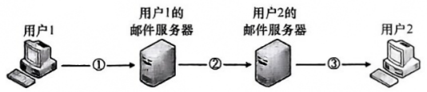
SMTP、 SMTP、SMTP
POP3、 SMTP、 POP3
POP3、 SMTP、SMTP
SMTP、 SMTP、POP3
D
SMTP 采用“推”的通信方式，即用户代理向邮件服务器及邮件服务器之间发送邮件时，SMTP客户主动将邮件“推”送到SMTP 服务器。而POP3采用“拉”的通信方式，即用户读取邮件时，用户代理向邮件服务器发出请求，“拉”取用户邮箱中的邮件。
主机甲与主机乙之间已建立一个 TCP 连接，双方持续有数据传输，且数据无差错与丢失。若甲收到一个来自乙的TCP段，该段的序号为1913、确认序号为 2046、有效载荷为100B，则甲立即发送给乙的TCP段的序号和确认序号分别是 ( )。
2046、2012
2046、2013
2047、2012
2047、2013
B.
确认序号ack 是期望收到对方下一个报文段的数据的第一个字节的序号，序号 seq是指本报文闪断表送的数据的第一个字节的序号。甲收到一个来自乙的TCP段，该段的序号 seq=1913、确认序号ack=2046、有效载荷为100B, 表明到序号1913+100~1=2012 为止的所有数据甲均已收到,司艺期重收到下一个报文段的序号从 2046 开始。因此甲发给乙的 TCP 段的序号 seq₁=ack=2046和腾讯序号： aCk₁=8eq+100=2013。
主机甲和乙建立了 TCP 连接, 甲始终以 MSS=1KB 大小的段发送数据，并一直有数据发送；乙每收到一个数据段都会发出一个接收窗口为10KB的确认段。若甲在t时刻发生超时的时候拥塞窗口为8KB，则从t时刻起，不再发生超时的情况下，经过10个RTT后, 甲的发送窗口是( )。
10KB
12KB
14KB
15KB
A.
当t时刻发生超时时，把 ssthresh 设为8的一半，即4，把拥塞窗口设为1KB。然后经历10个 RTT后, 拥塞窗口的大小依次为2,4,5,6,7,8,9,10,11,12, 而发送窗口取当时的拥塞窗口和接收窗口的最小值，接收窗口始终为10KB，所以此时的发送窗口为10KB，答案为选项A。
主机甲通过1个路由器(存储转发方式)与主机乙互连，两段链路的数据传输速率均为10Mb/s，主机甲分别采用报文交换和分组大小为 10kb的分组交换向主机乙发送一个大小为8Mb(1M=10⁶)的报文。若忽略链路传播延迟、分组头开销和分组拆装时间，则两种交换方式完成该报文传输所需的总时间分别为 ( )。
800ms、 1600ms
801ms、 1600ms
1600ms、 800ms
1600ms、 801ms
D
传输图为：甲——路由器——乙。
在题目没有明确说明的情况下，不考虑排队时延和处理时延，只考虑发送时延和传播时延，本题中忽略传播时延，因此只针对报文交换和分组交换计算发送时延即可。
计算报文交换的发送时延。报文交换将信息直接传输，其发送时延是每个结点转发报文的时间。而对于每个结点，均有发送时延 T=8Mb/10Mb/s=0.8s, 由于数据从甲发出, 又被路由器转发1次，因此一共有2个发送时延，所以总发送时延为1.6s, 即报文交换的总时延为1.6s, 排除A、B选项。
计算分组交换的发送时延。简单画出前 3 个分组的发送时间示意图如右所示。
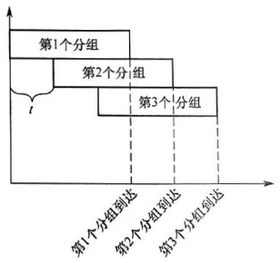
图中t为第2个分组等待第1个分组从第1个结点发送完毕的时间。观察发现，在所有分组长度相同的情况下，总的发送时延应为第1个分组到达接收端的时间，加上其余所有分组等待第1个分组在第1个结点的时间t，即总的发送时延 T=t₁+(n-1)t,其中t₁为第1个分组到达接收端的时间，n为分组数量，t为第2个分组等待第1个分组从第1个结点发送完毕的时间。首先计算t₁，同样，分组1从甲发送，被路由器转发，一共有2个发送时延，即 t₁=(10kb/10Mb/s)×2=2ms。其次计算分组数量n，由于忽略分组头开销，因此n=8Mb/10kb=800。将结果代入T的公式，求得发送时延T=801ms。
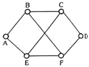
在一个 TCP 连接中, MSS为1KB, 当拥塞窗口为34KB时收到了3个冗余ACK报文。如果在接下来的4个RTT内报文段传输都是成功的，那么当这些报文段均得到确认后，拥塞窗口的大小是( )。
8KB
16KB
20KB
21KB
D
条件“收到了3个冗余ACK报文”说明此时应执行快恢复算法，因此慢开始门限值设为17KB，并在接下来的第一个 RTT 中 ewnd 也被设为 17KB, 第二个 RTT 中 cwnd=18, 第三个 RTT 中cwnd=19KB, 第四个RTT中cwnd=20KB, 第四个RTT中发出的报文全部得到确认后, cwnd增加1KB，变为21KB。注意 cwnd的增加都发生在收到确认报文后。
要发送的数据是1101011011, 采用CRC校验, 生成多项式是10011, 那么最终发送的数据应是( )。
1101 0110111010
11010110 1101 10
1101 0110 1111 10
11110011011100
假设一个帧有m位，其对应的多项式为 G(x)，则计算冗余码的步骤如下：
① 加0。假设G(x)的阶为r，在帧的低位端加上r个0。
② 模 2除。利用模2除法，用 G(x)对应的数据串去除①中计算出的数据串，得到的余数即为冗余码(共r位，前面的0不可省略)。
多项式以2 为模运算。按照模2 运算规则，加法不进位，减法不借位，它刚好是异或操作。乘除法类似于二进制运算，只是在做加减法时按模2规则进行。根据以上算法计算可得答案为选项C。
若主机甲与主机乙已建立一条TCP连接, 最大段长(MSS) 为1KB,往返时间(RTT)为2ms，则在不出现拥塞的前提下，拥塞窗口从8KB增长到32KB所需的最长时间是( )。
4ms
8ms
24ms
48ms
D
由于慢开始门限ssthresh可以根据需求设置，为了求拥塞窗口从8KB增长到32KB 所需的最长时间，可以假定慢开始门限小于或等于 8KB，只要不出现拥塞，拥塞窗口就都是加法增大，每经历一个传输轮次(RTT), 拥塞窗口逐次加1, 因此所需的最长时间为(32-8)×2ms=48ms。
A和B建立了TCP连接, 当A收到确认号为100的确认报文段时, 表示 ( )。
报文段99 已收到
报文段 100已收到
末字节序号为99的报文段已收到
末字节序号为100的报文段已收到
C
TCP 的确认号是指明接收方下一次希望收到的报文段的数据部分第一个字节的编号，可以看出 前一个已收到的报文段的最后一个字节的编号为99，所以选项C正确。报文段的序号是其数据部分第一个字节的编号。选项A、B不正确，因为有可能已收到的这个报文的数据部分不止一“字节，那么报文段的编号就不为99，但可以说编号为99的字节已收到。
TCP 中滑动窗口的值设置太大，对主机的影响是( )。
由于传送的数据过多而使路由器变得拥挤，主机可能丢失分组
产生过多的ACK
由于接收的数据多，而使主机的工作速度加快
由于接收的数据多，而使主机的工作速度变慢
A
TCP 使用滑动窗口机制来进行流量控制，其窗口尺寸的设置很重要，如果滑动窗口值设置得7小于那么会产生过多的ACK(因为窗口大可以累积确认，因此会有更少的ACK)；如果设置得太大，那么又会由于传送的数据过多而使路由器变得拥挤，导致主机可能丢失分组。
在TCP/IP 参考模型中，由传输层相邻的下一层实现的主要功能是( )。
对话管理
路由选择
端到端报文段传输
结点到结点流量控制
B
TCP/IP 模型中与传输层相邻的下一层是网际层。TCP/IP 的网际层使用一种尽力而为的服务，它将分组发往任何网络，并为之独立选择合适的路由，但不保证各个分组有序到达，B正确。TCP/IP认为可靠性是端到端的问题(传输层的功能)，因此它在网际层仅有无连接、不可靠的通信模式，无法完成结点到结点的流量控制(OSI参考模型的网络层具有该功能)。端到端的报文段传输为传 输层的功能。对话管理在 TCP/IP 中属于应用层的功能。A、C和D错误。
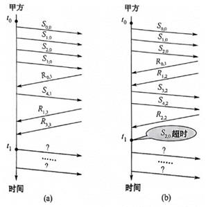
下列关于网络应用模型的叙述中，错误的是 ( )。
在P2P模型中，结点之间具有对等关系
在客户/服务器(C/S)模型中，客户与客户之间可以直接通信
在C/S模型中，主动发起通信的是客户，被动通信的是服务器
在向多用户分发一个文件时，P2P模型通常比C/S模型所需的时间短
B
在P2P 模型中，每个结点的权利和义务是对等的。在C/S 模型中，客户是服务发起方，服务器被动接受各地客户的请求，但客户之间不能直接通信，例如Web应用中两个浏览器之间并不直接通信。P2P 模型减轻了对某个服务器的计算压力，可以将任务分配到各个结点上，极大提高了系统效率和资源利用率。
使用浏览器访问某大学的Web网站主页时，不可能使用到的协议是( )。
PPP
ARP
UDP
SMTP
D
接入网络时可能会用到PPP，A 可能用到；计算机不知道某主机的MAC 地址时，用IP地址查询相应的MAC地址会用到ARP，B 可能用到； 访问Web网站时，若 DNS 缓冲没有存储相应域名的IP地址，用域名查询相应的IP 地址时要使用DNS，而DNS是基于UDP的，所以C 可能用到；SMTP 只有使用邮件客户端发送邮件，或邮件服务器向其他邮件服务器发送邮件时才会用到，单纯地访问Web网页不可能用到，选 D。
下列选项中，不属于物理层接口规范定义范畴的是 ( )。
接口形状
引脚功能
物理地址
信号电平
C
物理层的接口规范主要分为4种：机械特性、电气特性、功能特性、规程特性。机械特性规定连接所用设备的规格，即选项A所说的接口形状。电气特性规定信号的电压高低、阻抗匹配等，如选项D所说的信号电平。功能特性规定线路上出现的电平代表什么意义、接口部件的信号线(数据线、控制线、定时线等)的用途，如选项B所说的引脚功能。选项C中的物理地址是MAC 地址，它属于数据链路层的范畴。
若甲向乙发起一个 TCP连接, 最大段长MSS=1KB, RTT=5ms, 乙开辟的接收缓存为64KB，则甲从连接建立成功至发送窗口达到32KB，需经过的时间至少是()。
25ms
30ms
160ms
165ms
A
按照慢开始算法，发送窗口=min{拥塞窗口，接收窗口}，初始的拥塞窗口为最大报文段长度1KB。每经过一个 RTT，拥塞窗口翻倍，因此需至少经过5个 RTT，发送窗口才能达到32KB，所以选A。这里假定乙能及时处理接收到的数据，空闲的接收缓存≥32KB。
TCP/IP 参考模型的网络层提供的是 ( )。
无连接不可靠的数据报服务
无连接可靠的数据报服务
有连接不可靠的虚电路服务
有连接可靠的虚电路服务
A
TCP/IP 的网络层向上只提供简单灵活的、无连接的、尽最大努力交付的数据报服务。考察IP首部，如果是面向连接的，那么应有用于建立连接的字段，但是没有；如果提供可靠的服务，那么至少应有序号和校验和两个字段，但是IP 分组头中也没有(IP首部中只有首部校验和)。通常有连接、可靠的应用是由传输层的 TCP 实现的。
假设客户C和服务器S已建立一个TCP连接, 通信往返时间RTT=50ms,最长报文段寿命MSL=800ms，数据传输结束后，C 主动请求断开连接。若从C 主动向S发出FIN段时刻算起，则C和S进入CLOSED状态所需的时间至少分别是( )。
850 nus,50ms
1650ms,50ms
850ms,75ms
1650ms,75ms
D
TCP 连接的释放过程如图5.8所示。题目问的是最少时间，所以当服务器S收到客户C发送的FIN请求后不再发送数据，而立马发送FIN 请求(即第②步和第③步同时发生，忽略FIN-WAIT-2和CLOSE-WAIT 状态)。C收到S发来的FIN 报文段后,进入CLOSED 状态还需等到TIME-WAIT结束,总用时至少为1RTT+2MSL=50+800×2=1650ms。S进入CLOSED 状态需要经过3次报文段的传输时间, 即1.5RTT=75ms。
A和B建立TCP连接, MSS为1KB。某时, 慢开始门限值为2KB, A的拥塞窗口为4KB,在接下来的一个RTT内，A向B发送了4KB的数据(TCP的数据部分)，并且得到了B的确认，确认报文中的窗口字段的值为2KB。在下一个RTT中，A最多能向B发送( )数据。
2KB
8KB
5KB
4KB
A
本题中出现了拥塞窗口和接收端窗口，为了保证B的接收缓存不发生溢出，发送窗口应该取两者的最小值。先看拥塞窗口，由于慢开始门限值为2KB，第一个 RTT中A拥塞窗口为4KB，按照拥塞避免算法，收到B的确认报文后，拥塞窗口增长为5KB。再看接收端窗口，B通过确认报文中窗口字段向A通知接收端窗口，那么接收端窗口为2KB。因此在下一次发送数据时，A的发送窗口应该为2KB，即一个 RTT 内最多发送2KB。所以选项A正确。
假设主机 H 通过 HTTP/1.1 请求浏览某 Web 服务器 S 上的 Web 页news408. html, news408. html引用了同目录下的1幅图像,news408. html文件大小为 1MSS(最大段长), 图像文件大小为3MSS, H访问S的往返时间RTT=10ms, 忽略HTTP响应报文的首部开销和TCP段传输时延。若H已完成域名解析，则从H请求与S建立TCP连接时刻起，到接收到全部内容止，所需的时间至少是 ( )。
30ms
40ms
50ms
60ms
B
HTTP/1.1 默认使用流水线的持久连接，所有请求都是连续发送的。要求最少时间，最理想的情况是TCP在第三次握手的报文段中捎带HTTP 请求，以及TCP 连接后慢开始阶段不考虑拥塞。假设接收方有足够大的缓存空间，即发送窗口等同于拥塞窗口，共需要经过：第1个 RTT，进行TCP 连接,此时服务器S的发送窗口=IMSS, 并在第三次握手时捎带HTTP 请求; 第2个 RTT,服务器S发送大小为IMSS的html文件，主机C 确认后服务器S的发送窗口变为2MSS； 第3个RTT，服务器S发送大小为2MSS的图像文件，主机C确认后服务器S的发送窗口变为4MSS：第4个RTT, 服务器S发送剩下的1MSS图像文件, 完成传输,总共需要4个RTT, 即40ms。
以下关于P2P 概念的描述中,错误的是 ( )。
P2P 是网络结点之间采取对等方式直接交换信息的工作模式
P2P 通信模式是指P2P 网络中对等结点之间的直接通信能力
P2P 网络是指与互联网并行建设的、由对等结点组成的物理网络
P2P 实现技术是指为实现对等结点之间直接通信的功能所需要设计的协议、软件等
C
选项C中“P2P网络是一种物理网络”的描述是错误的。P2P 网络是指在互联网中由对等结点组成的一种覆盖网络(Overlay Network)，是一种动态的逻辑网络。另外，对等结点之间具有直接通信的能力是 P2P 的显著特点。
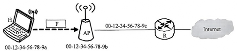
若主机甲与主机乙建立TCP 连接时，发送的SYN段中的序号为 1000，在断开连接时，甲发送给乙的FIN段中的序号为 5001，则在无任何重传的情况下，甲向乙已经发送的应用层数据的字节数为 ( )。
4002
4001
4000
3999
C
甲与乙建立TCP 连接时发送的SYN段中的序号为 1000，则在数据传输阶段所用起始序号为1001，在断开连接时，甲发送给乙的FIN段中的序号为5001，在无任何重传的情况下，甲向乙已经发送的应用层数据的字节数为5001-1001=4000。
下图为一段差分曼彻斯特编码信号波形，该编码的二进制串是( )。
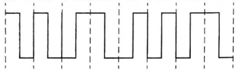
1011 1001
差分曼彻斯特编码常用于局域网传输，其规则是：若码元为1，则前半个码元的电平与上一码元的后半个码元的电平相同；若码元为 0，则情形相反。差分曼彻斯特编码的特点在于，在每个时钟周期的起始处，跳变则说明该比特是 0，不跳变则说明该比特是 1。根据题图，第1 个码元的信号波形因缺乏上一码元的信号波形，无法判断是0 还是1，但根据后面的信号波形，可以求出第2~8个码元为011 1001。
192.168.0.0，192.168.1.0，192.168.2.0，192.168.3.0，这四个网络地址能否实现超网聚合，如果可以，聚合后的网络IP地址范围是多少？子网掩码是多少？网络地址和广播地址是多少？
答：（1）可以实现超网聚合。
（2）将四个网络地址转换为二进制：
192.168.0.0：11000000 10101000 00000000 00000000
192.168.1.0：11000000 10101000 00000001 00000000
192.168.2.0：11000000 10101000 00000010 00000000
192.168.3.0：11000000 10101000 00000011 00000000
（3）从第一位开始比较这个网络地址的相同部分，共有22位相同，所有相同的部分将保留为超网的网络部分，剩余的部分将保留为超网的主机部分。
（4）聚合后的IP地址范围为：192.168.0.0/22，即：192.168.0.0/22----192.168.3.255/22
（5）子网掩码：255.255.252.0
（6）网络地址：192.168.0.0/22；广播地址：192.168.3.255/22
TCP使用的是GBN还是选择重传?
这是一个有必要弄清的问题。前面讲过，TCP 使用累积确认，这看起来像是GBN 的风格。但是，正确收到但失序的报文并不会丢弃，而是缓存起来，并且发送冗余 ACK 指明期望收到的下一个报文段，这是TCP 方式和GBN的显著区别。例如，A发送了 N个报文段，其中第k(k<N)个报文段丢失，其余N-1个报文段正确地按序到达接收方B。使用GBN时，A 需要重传分组k，及所有后继分组k+1,k+2,…,N。相反, TCP 却至多重传一个报文段, 即报文段 k。另外, TCP中提供一个SACK(Selective ACK) 选项, 即选择确认选项。使用选择确认选项时, TCP 看起来就和SR 非常相似。因此，TCP的差错恢复机制可视为GBN和SR协议的混合体。
某单位分配到一个B类地址，其net-id为129.250.0.0。该单位有4000多台机器。分布在16个不同的地方。如选用子网掩码为255.255.255.0，试给每一个地点分配一个子网掩码，并算出每个地点主机号码的最大值和最小值。
该单位机器分布在16个不同的地方，其子网号为4位即可，但题中选用子网掩码为255.255.255.0，故子网号为8位，则各个子网内主机号由8位表示。其最大值为255，最小值为0。
根据题中所给信息，可知对于这样一个B类地址，可以有28个子网号，每个子网中可以包含28（256）个主机。题目中要求4000多台机器分布在16个不同的地点，故，可以从256个子网号中任意选16个作为这16个地方的子网号。分配如下：
子网号 子网网络号 主机号码最小值 主机号码最大值
1(00000001) 192.250.1.0 192.250.1.1 192.250.1.254
2(00000010) 192.250.2.0 192.250.2.1 192.250.2.254
3(00000011) 192.250.3.0 192.250.3.1 192.250.3.254
. . . .
. . . .
16(00010000) 192.250.16.0 192.250.16.1 192.250.16.254
.一个分组交换网采用虚电路方式转发分组，分组的首部和数据部分分别为h位和p位。现有L(L>p，且L为p的倍数)位的报文要通过该网络传送，源点和终点之间的线路数为k，每条线路上的传播时延为d秒，数据传输速率为b位/秒，虚电路建立连接的时间为s秒，每个中间结点有m秒的平均处理时延。求源点开始发送数据直至终点收到全部数据所需要的时间。
整个传输过程的总时延=连接建立时延+源点发送时延+中间结点的发送时延+中间结点的处理时延+传播时延。
虚电路的建立时延已给出，为s秒。
源点要将L位的报文分割成分组，分组数=L/p，每个分组的长度为(h+p)，源点要发送的数据量=(h+p)L/p,所以源点的发送时延=(h+p)L/(pb)秒。
每个中间结点的发送时延=(h+p)/b秒，源点和终点之间的线路数为k，所以有k-1个中间结点,因此中间结点的发送时延=(h+p)(k-1)/b秒。
中间结点的处理时延=m(k-1)秒，传播时延=kd秒。所以源结点开始发送数据直至终点收到全部数据所需要的时间=s+(h+p)L/(pb)+(h+p)(k-1)/b+m(k-1)+kd秒。简化了通信连接。这也是无线电传输的最重要优点之一。
如何理解传输速率、带宽和传播速率?
传输速率指主机在数字信道上发送数据的速率，也称数据传输速率、数据率或比特率，单位是比特/秒(b/s)。更常用的速率单位是千比特/秒(kb/s)、兆比特/秒(Mb/s)、吉比特/秒(Gb/s)、太比特/秒(Tb/s)。
注意：在计算机领域，表示存储容量或文件大小时， K=2¹⁰=1024,M=2²⁰,G=2³⁰,T=2⁴⁰。这与通信领域中的表示方式不同。
带宽(Bandwidth)在计算机网络中指数字信道所能传送的“最高数据传输速率”，常用来表示网络的通信线路传送数据的能力，其单位与传输速率的单位相同。
传播速率是指电磁波在信道中传播的速率，单位是米/秒(m/s)，更常用的单位是千米/
(km/s)。电磁波在光纤中的传播速率约为 2×10⁸m/s。
举例如下。假定一条链路的传播速率为： 2×10⁸m/s,这相当于电磁波在该媒体上1μs可向前传播200m。若链路带宽为1Mb/s, 则主机在1μs内可向链路发送1bit数据。
在图1.15中,当t=0时,开始向链路发送数据; 当t=1μs时, 信号传播到200m处, 注入链路1比特； 当t=2μs时，信号传播到400m处，注入链路共2比特； 当t=3μs时，信号传播到600m处, 注入链路共3 比特。
从图1.15可以看出，在一段时间内，链路中有多少比特取决于带宽(或传输速率)，而1比特“跑”了多远取决于传播速率。
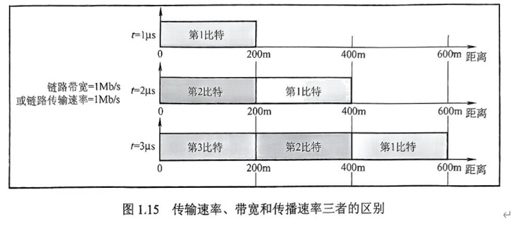
如下图所示，主机A和B都通过10Mb/s链路连接到交换机S。
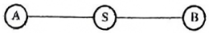
在每条链路上的传播延迟都是20μs。S是一个存储转发设备，在它接收完一个分组35μs后开始转发收到的分组。试计算把10000bit从A发送到B所需要的总时间。
1)作为单个分组。
2.) 作为两个5000bit的分组一个紧接着另一个发送。
1) 每条链路的发送延迟是 10000/(10Mb/s)=1000μs。
总传送时间等于2×1000+2×20+35=2075μs。
2)作为两个分组发送时，下面列出的是各种事件发生的时间表：
T=0 开始
T=500 A 完成分组1的发送，开始发送分组2
T=520 分组1完全到达S
T=555 分组1 从S 起程前往B
T=1000 A结束了分组2的发送
T=1055分组2 从S起程前往B
T=1075 分组2的第1位开始到达 B
T=1575 分组2的最后1位到达 B
事实上，从开始发送到A把第2个分组的最后1位发送完，经过的时间为2×500μs，第1个链路延迟20μs，交换机延迟35μs(然后才能开始转发第2个分组)，发送延迟为500μs，第2个链路延迟20μs。所以，总时间等于2×500μs+20μs+35μs+500μs+20μs=1575μs。
1) 每条链路的发送延迟是 10000/(10Mb/s)=1000μs。
总传送时间等于2×1000+2×20+35=2075μs。
2)作为两个分组发送时，下面列出的是各种事件发生的时间表：
T=0 开始
T=500 A 完成分组1的发送，开始发送分组2
T=520 分组1完全到达S
T=555 分组1 从S 起程前往B
T=1000 A结束了分组2的发送
T=1055分组2 从S起程前往B
T=1075 分组2的第1位开始到达 B
T=1575 分组2的最后1位到达 B
事实上，从开始发送到A把第2个分组的最后1位发送完，经过的时间为2×500μs，第1个链路延迟20μs，交换机延迟35μs(然后才能开始转发第2个分组)，发送延迟为500μs，第2个链路延迟20μs。所以，总时间等于2×500μs+20μs+35μs+500μs+20μs=1575μs。
文件转输协议的主要工作过程是怎样的?主进程和从属进程各起什么作用?
FTP 的主要工作过程如下：在进行文件传输时，FTP 客户所发出的传送请求通过控制连接发送给服务器端的控制进程，并在整个会话期间一直保持打开，但控制连接不用来传送文件。服务器端的控制进程在接收到FTP客户发送来的文件传输请求后，就创建数据传送进程和数据连接，数据连接用来连接客户端和服务器端的数据传输进程，数据传送进程实际完成对文件的传送，在传送完毕后关闭“数据传送连接”，并结束运行。
FTP 的服务器进程由两大部分组成：一个主进程，负责接收新的请求；若干从属进程，负责处理单个请求。
在一个数据链路协议中使用下列字符编码：
A 01000111; B 11100011; ESC 11100000; FLAG 01111110
在使用下列成帧方法的情况下，说明为传送4个字符A、B、ESC、FLAG所组织的帧而实际发送的二进制位序列(使用FLAG作为首尾标志，ESC作为转义字符)。
1)字符计数法。
2)使用字符填充的首尾定界法。
3)使用比特填充的首尾标志法。
1)第一字节为所传输的字符计数5，转换为二进制为00000101，后面依次为A、B、ESC、FLAG的二进制编码：
00000101 01000111 1110001 1 11100000 01111110
2) 首尾标志位 FLAG (01111110)，在所传输的数据中，若出现控制字符，则在该字符前插入转义字符ESC(11100000):
0111111001000111 11100011 11100000 11100000 11100000 0111111001111110
3) 首尾标志位 FLAG(01111110), 在所传输的数据中,若连续出现 5个“1”, 则在其后插入“0”:
01111110 01000111 110100011 111000000 011111010 01111110
端到端通信和点到点通信有什么区别?
从本质上说，由物理层、数据链路层和网络层组成的通信子网为网络环境中的主机提供点到点的服务，而传输层为网络中的主机提供端到端的通信。
直接相连的结点之间的通信称为点到点通信，它只提供一台机器到另一台机器之间的通信，不涉及程序或进程的概念。同时，点到点通信并不能保证数据传输的可靠性，也不能说明源主机与目的主机之间是哪两个进程在通信，这些工作都是由传输层来完成的。
端到端通信建立在点到点通信的基础上，它是由一段段的点到点通信信道构成的，是比点到点通信更高一级的通信方式，以完成应用程序(进程)之间的通信。“端”是指用户程序的端口，端口号标识了应用层中不同的进程。
子网掩码为255.255.255.0代表什么意思？
有三种含义：
是一个A类网的子网掩码，对于A类网络的IP地址，前8位表示网络号，后24位表示主机号，使用子网掩码255.255.255.0表示前8位为网络号，中间16位用于子网段的划分，最后8位为主机号。
第二种情况为一个B类网，对于B类网络的IP地址，前16位表示网络号，后16位表示主机号，使用子网掩码255.255.255.0表示前16位为网络号，中间8位用于子网段的划分，最后8位为主机号。
第三种情况为一个C类网，这个子网掩码为C类网的默认子网掩码。
共有4个站进行码分多址通信。4个站的码片序列为
A：（－1－1－1＋1＋1－1＋1＋1） B：（－1－1＋1－1＋1＋1＋1－1）
C：（－1＋1－1＋1＋1＋1－1－1） D：（－1＋1－1－1－1－1＋1－1）
现收到这样的码片序列S：（－1＋1－3＋1－1－3＋1＋1）。问哪个站发送数据了？发送数据的站发送的是0还是1？
S•A=（＋1－1＋3＋1－1＋3＋1＋1）／8=1， A发送1
S•B=（＋1－1－3－1－1－3＋1－1）／8=－1， B发送0
S•C=（＋1＋1＋3＋1－1－3－1－1）／8=0， C无发送
S•D=（＋1＋1＋3－1＋1＋3＋1－1）／8=1， D发送1
如何理解同步和异步?什么是同步通信和异步通信?
在计算机网络中，同步(Synchronous)的意思很广泛，没有统一的定义。例如，协议的三个要素之一就是“同步”。在网络编程中常提到的“同步”则主要指某函数的执行方式，即函数调用者需等待函数执行完后才能进入下一步。异步(Asynchronous) 可简单地理解为“非同步”。
在数据通信中，同步通信与异步通信区别较大。
同步通信的通信双方必须先建立同步，即双方的时钟要调整到同一个频率。收发双方不停地发送和接收连续的同步比特流。主要有两种同步方式：一种是全网同步，即用一个非常精确的主时钟对全网所有结点上的时钟进行同步；另一种是准同步，即各结点的时钟之间允许有微小的误差，然后采用其他措施实现同步传输。同步通信数据率较高，但实现的代价也较高。
异步通信在发送字符时，所发送的字符之间的时间间隔可以是任意的，但接收端必须时刻做好接收的准备。发送端可以在任意时刻开始发送字符，因此必须在每个字符开始和结束的地方加上标志，即开始位和停止位，以便使接收端能够正确地将每个字符接收下来。异步通信也可以帧作为发送的单位。这时，帧的首部和尾部必须设有一些特殊的比特组合，使得接收端能够找出一帧的开始(即帧定界)。异步通信的通信设备简单、便宜，但传输效率较低(因为标志的开销所占比例较大)。图2.13给出了以字符、帧为单位的异步通信示意图。
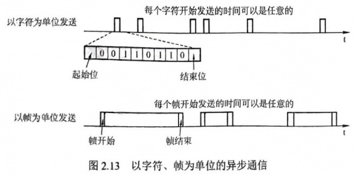
考虑一个最大距离为2km的局域网，当带宽为多大时，传播时延(传播速率为 2×10⁸m/s)等于100B分组的发送时延?对于512B分组结果又当如何?
传播时延： =2×10³m/(2×10⁸m/s)=10⁻⁵s=10μs。
1) 分组大小为100B:
假设带宽大小为x，要使得传播时延等于发送时延，带宽
x=100B/10μs=10MB/s=80Mb/s
2) 分组大小为512B:
假设带宽大小为y，要使得传播时延等于发送时延，带宽
y=512B/10μs=51.2MB/s=409.6Mb/s
因此, 带宽应分别等于 80Mb/s和409.6Mb/s。
在数据传输过程中，若接收方收到的二进制比特序列为 10110011010，接收双方采用的生成多项式为 G(x)=x⁴+x³+1,则该二进制比特序列在传输中是否出错?如果未出现差错，那么发送数据的比特序列和CRC检验码的比特序列分别是什么?
根据题意，生成多项式 G(x)对应的二进制比特序列为11001。进行如下的二进制模2除法，被除数为 10110011010, 除数为 11001:
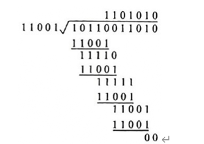
所得余数为0，因此该二进制比特序列在传输过程中未出现差错。发送数据的比特序列是1011001，CRC 检验码的比特序列是 1010。
注意：CRC检验码的位数等于生成多项式G(x)的最高次数。
MSS设置得太大或太小会有什么影响?
规定最大报文段MSS的大小并不是考虑到接收方的缓存可能放不下 TCP 报文段。实际上，MSS 与接收窗口没有关系。TCP 的报文段的数据部分，至少要加上40B 的首部(TCP 首部至少20B 和IP 首部至少20B)，才能组装成一个 IP数据报。若选择较小的MSS 值，网络的利用率就很低。设想在极端情况下，当TCP报文段中只含有1B的数据时，在 IP 层传输的数据报的开销至少有40B。这样，网络的利用率就不会超过1/41。到了数据链路层还要加上一些开销，网络的利用率进一步降低。但反过来，若 TCP 报文段很长，那么在 IP 层传输时有可能要分解成多个短数据报片，在终端还要把收到的各数据报片装配成原来的 TCP 报文段。传输有差错时，还要进行重传。这些都会使开销增大。
因此，MSS应尽量大一些，只要在IP 层传输时不要再分片就行。由于IP 数据报所经历的路径是动态变化的，在一条路径上确定的不需要分片的MSS，如果改走另一条路径，就可能需要进行分片。因此，最佳的 MSS 是很难确定的。MSS的默认值为536B，因此在因特网上的所有主机都能接收的报文段长度是536+20(×TCP 固定首部长度) =556B。
在如下条件下，计算使用非持续方式和持续方式请求一个 Web页面所需的时间：
1)测试的RTT的平均值为150ms, 一个gif对象的平均发送时延为35ms。
2)一个 Web页面中有10幅gif图片, Web页面的基本HTML 文件、HTTP请求报文、TCP 握手报文大小忽略不计。
3) TCP 三次握手的第三步中捎带一个 HTTP请求。
4)使用非流水线方式。
每次进行TCP 三次握手时，前两次握手消耗一个RTT=150ms，第3次握手的报文段捎带客户对HTML 文件的请求，因此请求和接收基本HTML 文件耗时一个 RTT=150ms(其大小忽略不计时, 发送时延为0ms)。
在非持久连接方式下：
第一次建立 TCP 连接并传送html文件所需的时间为thtml=(150+150) ms=300ms;
每次建立 TCP 连接并传送一个gif文件所需的时间为tgir=(150+150+35) ms=335ms;
所以总时间 t_s=t_hrml+t_gif×10=(300+335×10)ms=3650ms。
在持久连接方式下：
只需要建立一次 TCP 连接，然后传送html文件和 10个 gif文件。
总时间 tε=t_球α TcP+t_btiml+t_gir x^2 10=150+150+(150+35)×10=2150ms
一个简单的电话系统由两个端局和一个长途局连接而成，端局和长途局之间由1MHz的全双工主干连接。在8小时的工作日中，一部电话平均使用4次，每次的平均使用时间为
6分钟。在所有通话中，10%的通话是长途(即通过端局)。假定每条通话线路的带宽是4kHz，请分析一个端局能支持的最大电话数。
每部电话平均每小时通话次数=4/8=0.5 次，每次通话 6分钟，因此一部电话每小时占用一条电路3 分钟，即20部电话可共享一条线路。由于只有 10%的呼叫是长途，因此200 部电话占用一条完全时间的长途线路。局间干线复用了 10⁶/(4×10³)=250条线路，每条线路支持 200 部电话，因此一个端局能支持的最大电话数是200×250=50000部①。
华为深圳全资子公司新建4个机房，每个机房有18台机器，现给定一个网络地址空间：192.168.9.0，现在需要将其划分为4个子网。请写出具体划分的过程及相关子网的IP地址范围（要求：写出子网的网络号、子网掩码和子网主机地址范围）。
（1）192.168.10.0是一个 C 类的 IP 地址，网络号占24位，主机号占8位，标准掩码为：255.255.255.0。
（2）要划分为 4个子网必然要向最后的 8 位主机号借位，使用公式 2n>=所需子网数，借2位时，除去2个特殊地址，只剩2个子网可用，所以得出相对应的子网需要向主机位借3 位。
（3）即：得到 6 个可用的子网地址，全部转换为点分十进制表示，如下所示：
1)11000000 10101000 00001010 00100000 = 192.168.10.32
2)11000000 10101000 00001010 01000000 = 192.168.10.64
3)11000000 10101000 00001010 01100000 = 192.168.10.96
4)11000000 10101000 00001010 10000000 = 192.168.10.128
5)11000000 10101000 00001010 10100000 = 192.168.10.160
6)11000000 10101000 00001010 11000000 = 192.168.10.192
（4）同样可算出子网掩码：转换为点分十进制表示为11111111 11111111 11111111 11100000 = 255.255.255.224
（5）注意在一个网络中主机地址全为 0 的 IP 是网络地址，全为 1 的 IP 是网络广播地址，不可用，所以我们的子网地址和子网主机地址如下：
1)子网1：192.168.10.32
掩码：255.255.255.224
主机IP：192.168.10.33—62
2)子网2：192.168.10.64
掩码： 255.255.255.224
主机IP：192.168.10.65—94
3)子网3：192.168.10.96
掩码：255.255.255.224
主机 IP：192.168.10.97—126
4)子网 4：192.168.10.128
掩码：255.255.255.224
主机 IP：192.168.10.129—158
5)子网 5：192.168.10.160
掩码：255.255.255.224
主机 IP：192.168.10.161—190
6)子网 6：192.168.10.192
掩码：255.255.255.224
主机 IP：192.168.10.193—222
只要取出其中的4 个子网就可以完成子网的划分和地址的分配。
在上题的分组交换网中，设报文长度和分组长度分别为x和(p+h)(bit),其中p为分组的数据部分的长度，而h为每个分组所带的控制信息固定长度，与p的大小无关。通信的两端共经过k段链路。链路的数据率为b(b/s)，但传播时延和结点的排队时间均可忽略不计。若打算使总的时延为最小，问分组的数据部分长度p应取为多大？（提示：参考图1-12的分组交换部分，观察总的时延是由哪几部分组成。）
总时延D表达式，分组交换时延为：D= kd+(x/p)*((p+h)/b)+ (k-1)*(p+h)/b D对p求导后，令其值等于0，求得p=[(xh)/(k-1)]^0.5。
一个应用程序用UDP，到了IP 层将数据报再划分为4个数据报片发送出去。结果前两个数据报片丢失，后两个到达目的站。过了一段时间应用程序重传UDP， 而IP 层仍然划分为4个数据报片来传送。结果这次前两个到达目的站而后两个丢失。试问：在目的站能否将这两次传输的4个数据报片组装成为完整的数据报?假定目的站第一次收到的后两个数据片仍然保存在目的站的缓存中。
不行。重传时，IP 数据报的标识字段会有另一个标识符。仅当标识符相同的 IP 数据报片才能组装成一个IP 数据报。前两个 IP 数据报片的标识符与后两个IP数据报片的标识符不同，因此不能组装成一个 IP 数据报。
物理层要解决哪些问题？物理层的主要特点是什么？
物理层要解决的主要问题：
（1）物理层要尽可能地屏蔽掉物理设备和传输媒体，通信手段的不同，使数据链路层感觉不到这些差异，只考虑完成本层的协议和服务。
（2）给其服务用户（数据链路层）在一条物理的传输媒体上传送和接收比特流（一般为串行按顺序传输的比特流）的能力，为此，物理层应该解决物理连接的建立、维持和释放问题。
（3）在两个相邻系统之间唯一地标识数据电路。
物理层的主要特点：
（1）由于在OSI之前，许多物理规程或协议已经制定出来了，而且在数据通信领域中，这些物理规程已被许多商品化的设备所采用，加之，物理层协议涉及的范围广泛，所以至今没有按OSI的抽象模型制定一套新的物理层协议，而是沿用已存在的物理规程，将物理层确定为描述与传输媒体接口的机械，电气，功能和规程特性。
（2）由于物理连接的方式很多，传输媒体的种类也很多，因此，具体的物理协议相当复杂。
主机H通过快速以太网连接Internet, IP 地址为192.168.0.8, 服务器S的IP地址为211.68.71.80。H与S使用TCP通信时, 在H上捕获的其中5个IP分组如表1所示。
表1
编 号 |
IP 分组的前40B 内容(十六进制) |
|||
45000030 |
01 9b40 00 |
8006 1de8 c0a80008 |
d3444750 |
|
1 |
||||
0b d9 13 88 |
846b41c5 |
0000 0000 70 024380 |
5db00000 |
|
45000030 |
00 004000 |
3106 6e 83 d3444750 |
c0 a80008 |
|
2 |
||||
13 88 0b d9 |
e0 59 9fef |
846b41c6 70 12 16 d0 |
37e10000 |
|
45 00 00 28 |
019c40 00 |
8006 1def c0a80008 |
d3 44 47 50 |
|
3 |
||||
0b d9 13 88 |
846b41c6 |
e059 9ff0 50 f0 43 80 |
2b32 0000 |
|
450000 38 |
019d4000 |
8006 1d de c0a80008 |
d3 444750 |
|
4 |
||||
0b d9 13 88 |
846b41c6 |
e059 9ff0 50 1843 80 |
e655 0000 |
|
45 00 00 28 |
68 11 4000 |
3106067a d3 444750 |
c0a8 0008 |
|
5 |
||||
13 88 0bd9 |
e0 599f f0 |
846b41 d6 5010 16 d0 |
57 d20000 |
|
回答下列问题：
1)表1中的IP分组中，哪几个是由H发送的?哪几个完成了 TCP 连接建立过程?哪几个在通过快速以太网传输时进行了填充?
2)根据表1中的IP分组，分析S已经收到的应用层数据字节数是多少。
3)若表1中的某个IP分组在S发出时的前40B如表2所示，则该IP分组到达H时经过了多少个路由器?
表 2
来自S的分组 |
450000 28( 6811 4000 40 06 ec ad d3 44 47 50ca 76 01 06 1388a108 e0 59 9ff0846b41 d6 501016d0 b7 d6 0000 |
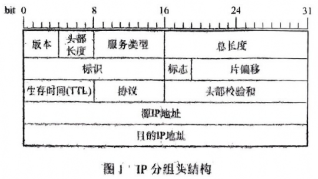
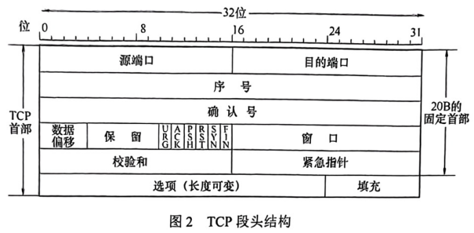
1) 由图1看出, 源IP 地址为IP 分组头的第13~16个字节。在表1中, 1、3、4号分组的源IP 地址均为192.168.0.8(c0a80008H), 所以1、3、4号分组是由H发送的。
在表1中, 1号分组封装的TCP段的SYN=1, ACK=0, seq=846b 41c5H; 2号分组封装的TCP段的SYN=1, ACK=1, seq=e059 9fefH, ack=846b 41c6H; 3号分组封装的TCP段的 ACK=1, seq=846b41c6H, ack=e0599ff0H, 所以1、2、3号分组完成了 TCP连接的建立过程。
由于快速以太网数据帧有效载荷的最小长度为46B，表 1 中3、5 号分组的总长度为 40(28H)字节，小于46B，其余分组总长度均大于 46B。所以3、5号分组通过快速以太网传输时需要填充。
2)由3号分组封装的TCP段可知，发送应用层数据初始序号为seq=846b41c6H，由5号分组封装的TCP段可知, ack 为seq=846b41d6H, 所以S已经收到的应用层数据的字节数为846b41d6H-846b41c6H=10H=16B。
3)由于S发出的IP分组的标识=6811H，所以该分组所对应的是表1中的5 号分组。S发出
的IP 分组的TTL=40H=64, 5号分组的TTL=31H=49, 64-49=15, 所以可以推断该IP 分组到达H时经过了15个路由器。
用户主机上的电子邮件用户代理与邮件服务器建立了连接，现截获一个 TCP 报文段，如下图所示。图中显示了该报文段的前126个字节的十六进制及ASCII码内容。TCP首部长度为20B。请回答：
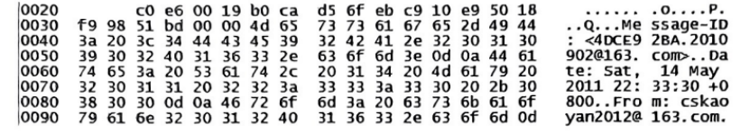
1)用户代理和服务器之间使用的应用层协议是什么?
2)用户代理使用的端口号是多少?
3)该邮件的发件人邮箱是什么?
1)本题中并未明确告诉这个报文段是从用户代理发往服务器还是从服务器发往用户代理。分析TCP 首部格式可知, 源端口为49382 (0xc0e6), 目的端口为25(0x0019), 因此该应用层协议为SMTP。
2)由于使用的是SMTP，且服务器端口25作为目的端口，因此源端口49382为用户代理所使用的端口。
3) 由于SMTP 的协议字段都是用ASCII码表示的，发件人的关键字是 FROM，从截图右侧的ASCII形式中直接找到答案 FROM:cskaoyan2012@163.com。
试在下列条件下比较电路交换和分组交换。要传送的报文共x比特。从源点到终点共经过k段链路，每段链路的传播时延为d秒，数据传输速率为b比特/秒。在电路交换时电路的建立时间为s秒。在分组交换时分组长度为p比特，且各结点的排队等待时间可忽略不计。问在怎样的条件下，分组交换的时延比电路交换的时延要小? (提示：画草图观察k段链路共有几个结点。)
由于忽略排队时延，因此
电路交换时延=连接时延+发送时延+传播时延
分组交换时延=发送时延+传播时延
显然，二者的传播时延都为kd。对电路交换，由于不采用存储转发技术，虽然是k段链路，连接后没有存储转发的时延，因此发送时延=数据块长度/信道带宽=x/b，从而电路交换总时延为
s+x/b+kd (1)
对于分组交换，设共有 n个分组，由于采用存储转发技术，一个站点的发送时延为t=p/b。显然，数据在信道中经过k-1个t时间的流动后，从第k个t开始，每个t时间段内将有一个分组到达目的站(把传播时延和发送时延分开讨论后，这里不再考虑传播时延)，从而 n 个分组的发送时延为(k-1)t+nt=(k-1)p/b+np/b, 分组交换的总时延为
kd+(k-1)p/b+np/b (2)
比较式(1)和式(2)可知，要使分组交换时延小于电路交换时延，要求
kd+(k-1)p/b+np/b<s+x/b+kd
对于分组交换，np≈x，(k-1)p/b<s时，分组交换总时延小于电路交换总时延。
有10个站连接到以太网上。试计算一下三种情况下每一个站所能得到的带宽。
（1）10个站都连接到一个10Mb/s以太网集线器；
（2）10个站都连接到一个100Mb/s以太网集线器；
（3）10个站都连接到一个10Mb/s以太网交换机。
（1）10个站都连接到一个10Mb/s以太网集线器：10mbs
（2）10个站都连接到一个100mb/s以太网集线器：100mbs
（3）10个站都连接到一个10mb/s以太网交换机：10mbs